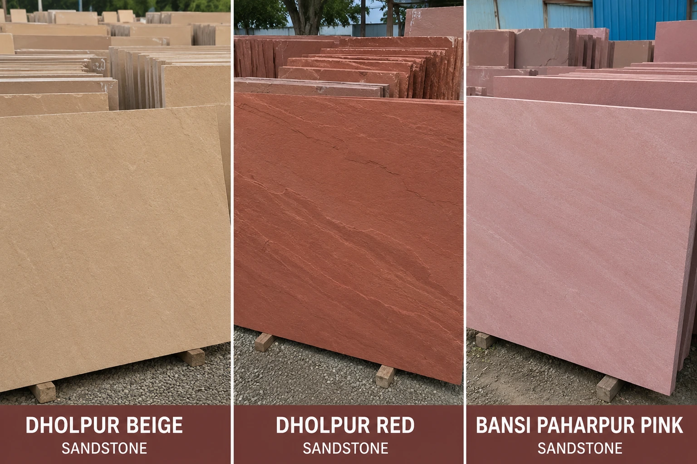
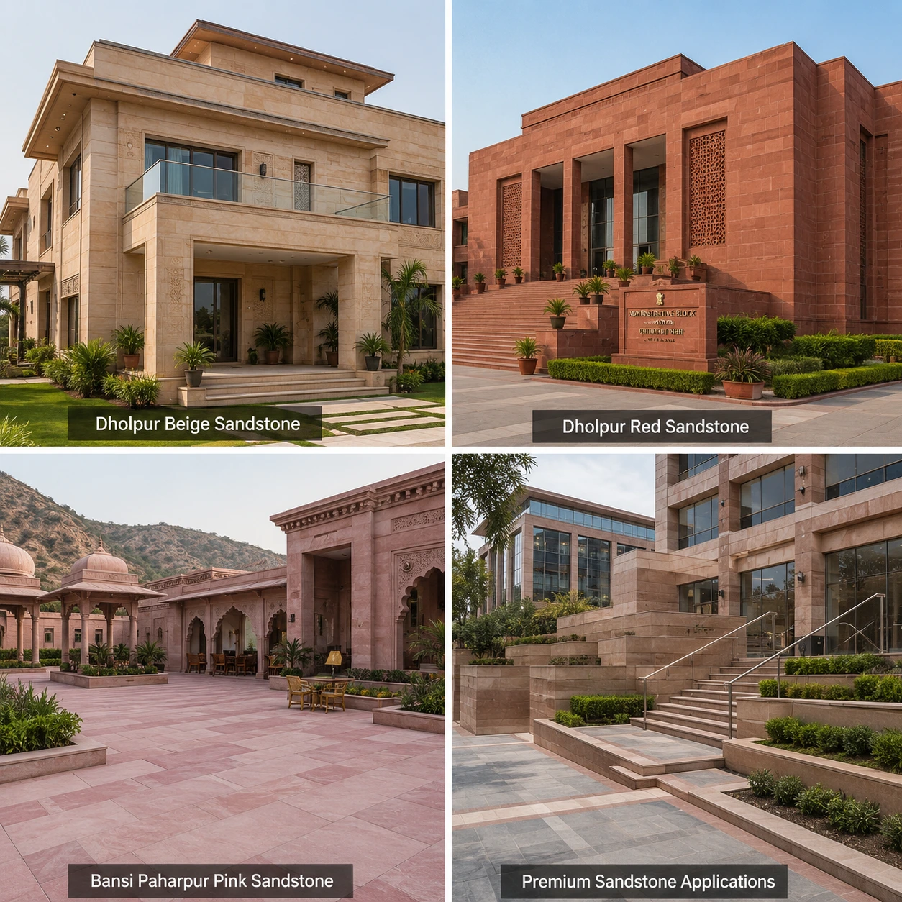
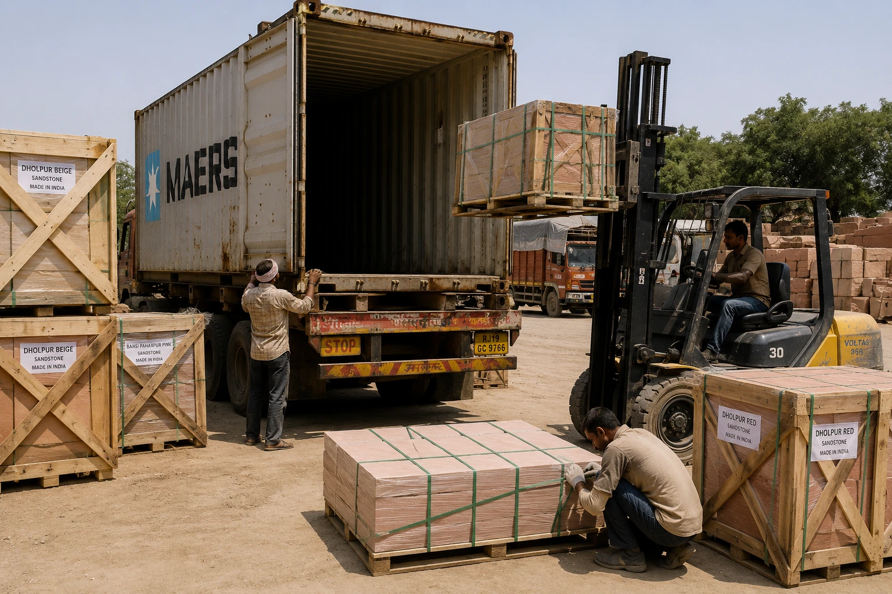
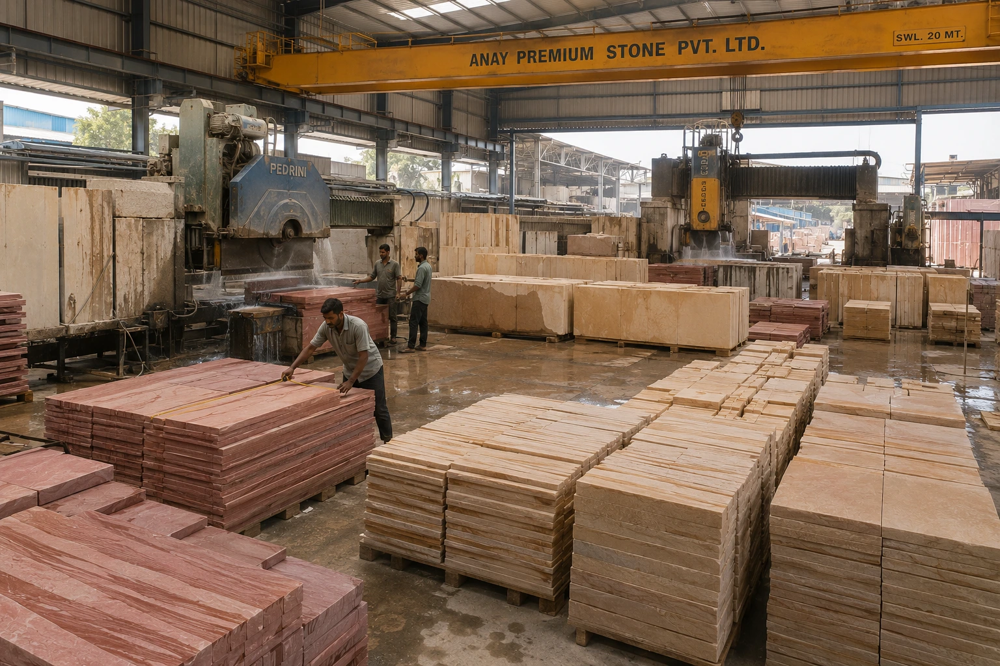

ANAY Premium Stone is a trusted sandstone supplier in Rajasthan supplying Dholpur Beige Sandstone, Dholpur Red Sandstone and Bansi Paharpur Pink Sandstone for architects, builders, traders, distributors, exporters and international construction projects. We provide premium sandstone products sourced and processed in Rajasthan, India's leading sandstone region.
Request a QuoteRajasthan is internationally recognised as India's most important source of premium natural sandstone. The region is home to some of the country's most respected sandstone varieties, including Dholpur Beige Sandstone, Dholpur Red Sandstone and Bansi Paharpur Pink Sandstone.
Architects, builders, landscape designers and procurement companies around the world source sandstone from Rajasthan because of its natural beauty, durability, dimensional stability and architectural versatility. Rajasthan sandstone has been used in residential developments, hospitality projects, public infrastructure and heritage architecture for decades.
As a sandstone supplier in Rajasthan, ANAY Premium Stone provides reliable access to premium sandstone products suitable for both domestic and international projects.
Learn more about ANAY Premium Stone and our premium sandstone supply capabilities from Rajasthan, India.

ANAY Premium Stone supplies a carefully selected range of premium sandstone products sourced from Rajasthan's leading sandstone regions. Our products are widely used in luxury residential, hospitality, commercial and landscape architecture projects.
We supply sandstone in slabs, tiles, paving stones, wall cladding, pool coping, steps, risers, kerbstones and custom architectural formats. Whether the requirement is for project procurement, wholesale distribution or export supply, we provide dependable sandstone sourcing solutions.
These sandstone products are supplied to builders, architects, traders, wholesalers, distributors, exporters and project developers across India and international markets.
Dholpur Beige Sandstone is one of Rajasthan's most widely specified natural building stones. Known for its warm buff-beige colour, fine grain texture and timeless appearance, it is frequently selected for luxury residential developments, hospitality projects and landscape architecture.
ANAY Premium Stone supplies Dholpur Beige Sandstone in slabs, tiles, paving stones, wall cladding and custom architectural formats. The stone's versatility makes it suitable for both interior and exterior applications.
Its elegant appearance and long-term durability continue to make Dholpur Beige Sandstone one of the most sought-after sandstone products supplied from Rajasthan.
Dholpur Red Sandstone is recognised for its rich terracotta-red colour, natural strength and architectural character. It has been used extensively in public buildings, institutional projects, monumental architecture and commercial developments throughout India and overseas.
ANAY Premium Stone supplies Dholpur Red Sandstone for architects, builders, exporters and procurement companies seeking premium natural stone with distinctive visual appeal.
Its distinctive colour and proven performance make Dholpur Red Sandstone one of Rajasthan's most respected natural stone products.
Bansi Paharpur Pink Sandstone is internationally admired for its elegant pastel pink colour and premium architectural appearance. Frequently specified for luxury hospitality projects, religious architecture, heritage-inspired developments and landmark buildings, it remains one of Rajasthan's most prestigious sandstone varieties.
ANAY Premium Stone supplies Bansi Paharpur Pink Sandstone in slabs, paving, wall cladding and custom architectural formats for domestic and international projects.
Its distinctive appearance and architectural elegance make it a preferred material for prestigious construction projects worldwide.

Rajasthan sandstone is widely used across a diverse range of architectural and construction applications. Its durability, natural beauty and design flexibility allow architects and builders to create timeless structures that combine functionality with visual appeal.
From luxury villas and resorts to public infrastructure and commercial developments, Rajasthan sandstone continues to play a significant role in contemporary architecture around the world.
The combination of durability, aesthetics and long-term performance continues to make Rajasthan sandstone a preferred choice for architects and project developers worldwide.

ANAY Premium Stone supports sandstone supply requirements across India and international markets through reliable manufacturing, inventory management and logistics systems. Our products are supplied to builders, traders, distributors, architects and importers seeking premium sandstone sourced from Rajasthan.
Whether the requirement involves commercial developments, hospitality projects, landscape architecture or wholesale distribution, we provide dependable sandstone supply solutions supported by professional packaging and logistics capabilities.
Our goal is to provide customers with consistent access to premium Rajasthan sandstone while maintaining quality, reliability and professional service standards.
We regularly support builders, architects, traders, distributors, exporters and procurement companies seeking a reliable sandstone supplier in Rajasthan for long-term sourcing and project-based procurement.

Rajasthan is home to some of India's most respected sandstone manufacturing facilities. ANAY Premium Stone combines access to premium sandstone resources with professional processing capabilities to supply sandstone products suitable for domestic and international markets.
Our manufacturing operations focus on product consistency, dimensional accuracy, quality control and dependable supply capabilities. From raw sandstone blocks to finished architectural products, every stage of production is managed to meet project and customer requirements.
This manufacturing capability allows us to support builders, architects, distributors, exporters and procurement companies seeking premium sandstone products from Rajasthan.
ANAY Premium Stone supplies sandstone products to a diverse range of customers operating across India and international markets.
Rajasthan is known for its extensive sandstone resources, including Dholpur Beige Sandstone, Dholpur Red Sandstone and Bansi Paharpur Pink Sandstone, which are widely used in architectural and construction projects worldwide.
We supply sandstone slabs, tiles, paving stones, wall cladding, pool coping, landscape stone and custom architectural sandstone products.
Yes. ANAY Premium Stone supplies sandstone products throughout India and international export markets.
Yes. We support wholesale distribution, project procurement and large-scale construction requirements.
Yes. All products can be packed using professional export-grade packaging suitable for international transportation.
We specialise in Dholpur Beige Sandstone, Dholpur Red Sandstone and Bansi Paharpur Pink Sandstone.
Yes. We can supply sandstone products according to project specifications, sizes and finishes.
We supply architects, builders, traders, wholesalers, distributors, exporters and procurement companies.
Yes. International buyers can contact us directly regarding sandstone sourcing requirements.
Yes. Architects, builders and project developers can source premium Rajasthan sandstone directly from ANAY Premium Stone for residential, commercial and hospitality projects.
Simply contact ANAY Premium Stone with your project requirements and we will provide pricing and supply information.
Looking for a reliable sandstone supplier in Rajasthan? Contact ANAY Premium Stone for pricing, technical specifications, samples, bulk supply requirements and project support.
✓ Bulk Supply Available
✓ Export Grade Packaging
✓ Custom Sizes & Finishes
✓ Project-Based Supply Support
Email: anaypremiumstone@gmail.com
Phone / WhatsApp: +91 7732865515
Location: Sarmathura, Dholpur, Rajasthan, India